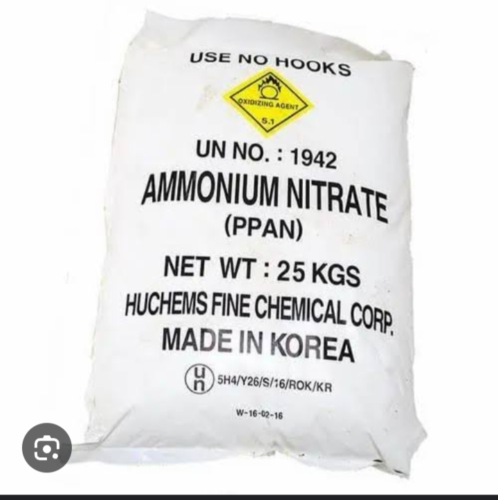

Description:
Ammonium Nitrate is a nitrogen-rich fertilizer suitable for cotton cultivation. It provides readily available nitrogen to support vegetative growth, leaf development, and overall plant vigor. Nitrogen is crucial for cotton plants as it is a key component of chlorophyll, which aids in photosynthesis.
- Content:
1. Nitrogen (N): 34%
2. Phosphorus (P): 0%
3. Potassium (K): 0%
- Points:
- High nitrogen content promotes vigorous vegetative growth and leaf production.
- Suitable for application during the early stages of cotton growth to support initial plant establishment.
- Helps increase cotton yield and fiber quality.